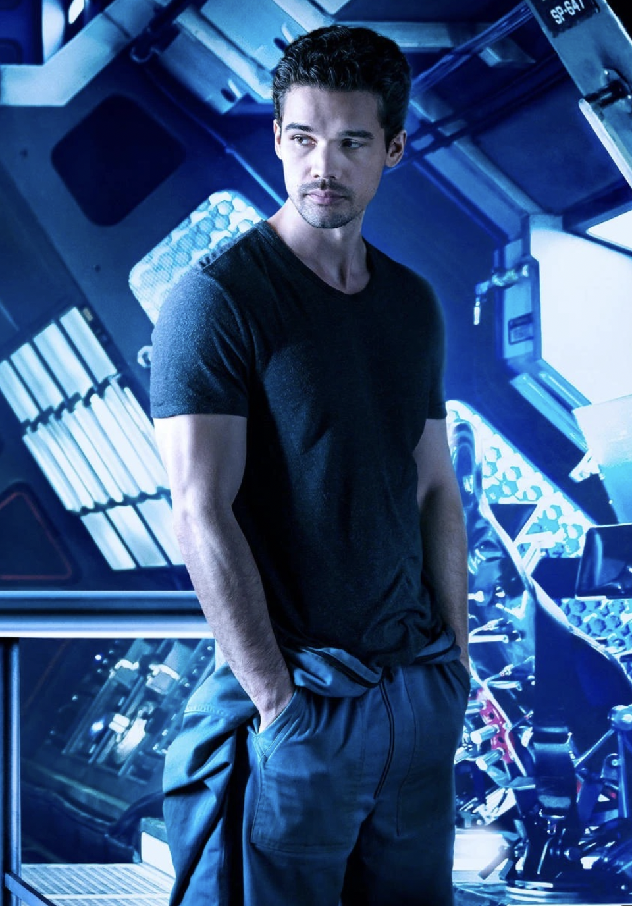

James Holden
 "I know you're trying to save lives. I am too!" - James Holden
- Idealistic: Holden is driven by a strong sense of justice and morality, often placing principles above personal gain.
- Charismatic: Possesses natural leadership qualities that inspire loyalty and trust in others.
- Stubborn: Has a tendency to stick to his convictions, even in the face of opposition or danger.
- Impulsive: Sometimes acts on instinct rather than careful deliberation, leading to risky decisions.
Naomi Nagata

Naomi Nagata
"A love story. Might help cool things down a bit" - Naomi Nagata
- Intelligent: Possesses exceptional technical skills and problem-solving abilities, especially in engineering and mechanics.
- Pragmatic: Balances Holden's idealism with a more realistic perspective, often providing practical solutions to complex problems.
- Independent: Values her autonomy and freedom, preferring to make decisions based on logic and necessity rather than emotion.
- Caring: Despite her tough exterior, she deeply cares for her friends and crewmates, often acting as a stabilizing force during times of crisis.